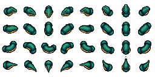

Giant serpent · modular draft
One head, overlapping body pieces and a tapering tail follow the same winding trail across several square cells. Drag on either scene to steer. This is an art and movement experiment; it does not spawn an enemy in the game.
A · Directional art · recommended
Eight authored directions. Fixed lighting and crisp pixels; some direction changes snap. Adjacent sections overlap every 7px.B · Rotated and stretched art
One east-facing body rotated along the tangent. Smoother headings, but lighting rotates and pixels shear on diagonals.Loading atlas…
The grey posts test depth: each piece sorts by its own ground position. Head height is a visual offset only. Turn-back is a bounded U-turn; the body retains its travelled path instead of flipping instantly.
Parts atlas · 32px cells
Rows: head, straight body, curved body, tail. Columns: E, SE, S, SW, W, NW, N, NE. The generated tail points in the column direction; the renderer selects the opposite heading for the trailing tip.

Research, limitations and test notes · Parts PNG · Frame map · Test results